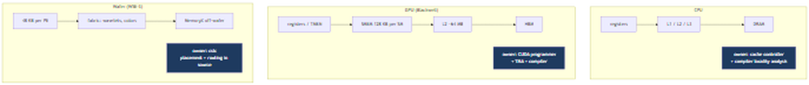
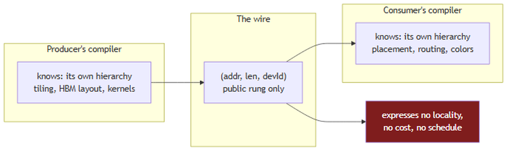
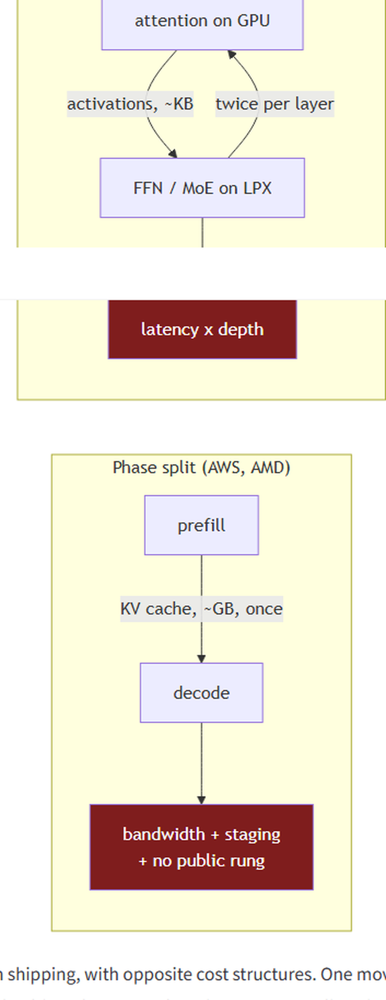

上一篇文章论证了KV缓存没有互换格式。姑且给它一个。假设两个厂商同意布局、dtype、块大小、scale位置和清单里的每一个轴。字节仍然必须移动。
这部分看起来像管道工程、其实不是，因为传输库对另一端的机器类型并不中立。它在历史上可以不必中立的原因，是一个程序总是拥有它移动数据所经的整个内存层级。Disaggregation是第一次把这个所有权拆给两个厂商。
这个问题对加速器而言并不新鲜。它是系统编程里最古老的结构。

CPU有寄存器，然后L1、L2、L3、DRAM、存储。每一级都比下一级更小、更快、更近，忽略层级的程序比尊重它的慢一个数量级。大多数程序员不天天想这个的原因是两个机制隐藏了它：硬件有缓存控制器，不问就抓取、逐出和预取；编译器代你推理局部性，分块循环、重排访问，让工作集装进一个实际上很快的层级。那个分析发展得够成熟、有自己的文献，建立在格、不动点和半环之上。
GPU有相同结构但移除了自动化。在Blackwell上，一个SM有寄存器、张量内存、每SM 128 KB的可配置统一L1和共享内存、64-65 MB的整体L2、然后HBM。共享内存访问约20-30周期。分布式共享内存让SM能在cluster内到达邻居的共享内存，带延迟惩罚。张量内存更新，与寄存器不同，需要显式用户分配和管理。
GPU不隐藏这些。没有缓存控制器决定什么该进共享内存。你写 `__shared__`，自己把tile分阶段进去，或用张量内存加速器在计算进行时异步把块从全局内存搬进共享内存。层级暴露出来，编程模型存在正是为了让你利用它。
Cerebras wafer是同一个想法推到极限。大约90万个处理单元在2D mesh里，每个48 KB本地SRAM，每个PE只访问自己的内存、亚纳秒延迟。其他一切是消息。PE通过电路交换的network-on-chip通信，沿配置路由发送叫wavelet的数据包，每个PE的路由器支持有限数量的并发电路：24，加8保留：叫颜色（colors），是绑定到物理路由资源的虚拟通道。两条可能碰撞的流必须分配不同颜色。
那台机器可编程，这个「如何」很重要，因为这个论证的简单版本是wafer很奇异因此很难。它不奇异。它有一种语言。CSL是Zig启发的dataflow语言，计算由数据到达触发，CSL程序不只是内核代码：它包含一个布局文件，规定哪些代码在哪些PE上运行、数据如何在它们之间路由。cslc编译器把它映射到物理fabric。放置和路由是源程序的一等公民。
现在把网络放中间，问远程对等方可以写进那些梯子的哪一档。
答案是一档，而且总是同一档：全局可寻址、物理稳定、可被非计算引擎的设备到达的那一档。CPU上是DRAM，GPU上是HBM。从来不是L1、不是共享内存、不是张量内存、不是PE的scratchpad。
NIXL：NVIDIA的推理传输库，vLLM的NixlConnector和Dynamo的disaggregated路径下面的东西：在类型系统里说明这点。它的内存空间被穷举：
// nixl/src/api/cpp/nixl_types.h
enum nixl_mem_t {
DRAM_SEG,
VRAM_SEG,
BLK_SEG,
OBJ_SEG,
FILE_SEG
};Host DRAM、GPU VRAM、块设备、对象存储、文件。没有 `SMEM_SEG`、没有 `TMEM_SEG`、没有 `PE_SEG`，它们的缺席不是疏忽。那些层级从片外不可被任何东西寻址。
NIXL移动的单元相应简单：
// nixl/src/api/cpp/nixl_descriptors.h
/**
* @class nixlBasicDesc
* @brief A basic descriptor class, single contiguous memory/storage
* element, alongside supporting methods
*/
class nixlBasicDesc {
public:
/** @var Start of Buffer */
uintptr_t addr;
/** @var Buffer Length */
size_t len;
/** @var deviceID/blockID/fileID */
uint64_t devId;
};一个指针、一个长度、一个设备号。单一连续。
这就是为什么RDMA需要注册（registration）：页面钉住让OS无法移动它们，虚拟到物理映射交给NIC，返回一个key让远程对等方每次访问出示。注册正是让公共横档的区域足够稳定、让外部设备能写进去的操作。它在层级的任何其他层级都没有意义。
这里是容易错过、因为从未让任何人痛苦过的部分。
你不能RDMA进共享内存。如果远程机器给你发KV缓存，它落在HBM。把它从HBM弄进attention内核真正想要的128 KB共享内存是第二次移动，由接收方用自己的机制执行：一个TMA描述符、一个异步拷贝、一个写那个内核的人选择的tiling策略。
所以即使在普通的全NVIDIA情形，交接也有两半。网络把字节送到公共横档。消费者自己的编译器和内核把字节沿层级带完剩下的路。
没人把这体验成边界，因为两半是同一批人对着同一布局写的。生产者知道消费者会要特定顺序的128元素tile，所以它把缓存按让消费者TMA描述符便宜的顺序写进HBM。那个协议真实、承重、完全未文档化，因为它从未需要离开建筑。
那就是seam。它一直存在。Disaggregation是当两半不再由同一组织书写时发生的事。
现在讲它变得可见的情形。
WSE-3有44 GB SRAM，这个数字邀请你把它想象成一个池，像你想象80 GB HBM一样。它不是池。它是90万×48 KB，对每个PE私有，彼此之间没有共享地址空间。
试着填描述符。一个中型模型一层的单个KV块量级是约一百千字节：不是某个PE的scratchpad，是两三个，而且在任何地址意义上都不相邻，因为没有地址意义。一个序列的整个缓存横跨数千PE。没有命名它的 `uintptr_t addr`，没有字节连续其上的 `size_t len`，没有解析成NIC能写进去的 `devId`。`VRAM_SEG` 是最近的枚举值，它是错的：这不是控制器后面的内存，这是计算基底。
也没有东西可钉住。注册假设你能让内存静止、同时设备写进去的内存。在wafer上，值住在哪是调度的一部分，而调度是cslc从布局文件发射的。
公共横档缺失。这意味着字节必须staging：落在host DRAM或MemoryX：已经在流式输入权重的片外存储：然后由wafer自己的dataflow作为调度工作拉上fabric。
所以交接至少两跳，第二跳不是发送方能控制的DMA。把它与disaggregate的理由对照。第一部分论证的是延迟：分离阶段让prefill停止打断decode、首token时间改善。现在首token等一个网络穿越、一个staging缓冲、一个fabric分发，全部坐在TTFT路径上、在拆分本想保护的指标之前。Splitwise测过一个512-token OPT-66B请求产生1.13 GB KV缓存；长上下文请求远大于此。
把这些读成wafer规模硬件不实用的论证很容易。那不是论点，上面CSL的描述就是原因。

Cerebras有做放置和路由的编译器。NVIDIA有编译器、TMA引擎和一整套把全局内存staging进共享内存的成熟惯用法。Intel、AMD和Arm有几十年的缓存感知代码生成，CPU有硬件控制器自动做。每一个都是对它自己的机器的局部性问题的合格答案。
摩擦在于：disaggregated流水线需要一个横跨其中两台机器的答案，而任一工具链都无法表示另一半。
cslc能调度张量落在fabric的哪里，但它看不见生产者的HBM布局、它的块表、或它的attention内核假定的tiling约定。生产者的编译器能发射它的内核最喜欢的任何布局的KV缓存，但它没有「然后这必须分发到一万个PE、其路由颜色已分配」的表示。双方各自在自己那一边正确优化局部性，在一个双方都无法看穿的边界两侧。
描述符是他们共享的全部词汇，而它只能表达一个字节范围、别的都不能。不能表达到达那个范围的成本。不能表达字节到达时该是什么布局。不能表达接收方是否自由放置它们，或是否已承诺一个约束它们能去哪的路由调度。
每个成熟架构通过给一个组件足够可见性来推理整条路径，从而解决局部性。Disaggregation移除那个可见性，用一个指针替换它。
扁平模型在任何这些之前、在普通硬件上就已经错了。
两个GPU之间的带宽随它们物理位置差72×：域内NVLink约900 GB/s，跨节点InfiniBand 50 GB/s，跨数据中心TCP 12.5 GB/s。近期工作指出DistServe、Splitwise和Mooncake都假设均匀RDMA，完全忽略这个。
同样缺陷，更温和的形式。描述符说 `(addr, len, devId)`，没说到达 `devId` 要花什么。选择哪个decode实例接收缓存、在72× 成本跨度上做放置决定的调度器，穿过的却是一个不报告任何成本的接口。
以上都假设拆分是prefill-then-decode，缓存每次请求跨一次。NVIDIA自己的安排不是那样。
Groq LPX取decode循环里延迟敏感的部分：feed-forward和MoE专家执行：而Rubin GPU保留prefill和decode attention。Attention留在GPU上因为KV缓存住在那里。所以缓存从不跨任何东西。跨的是激活，边界落进单个decode步内部。
算出形状。对隐藏维 `d`（bf16），每层跨 ~`2d` 字节每token，回程大致相同。`d = 8192` 时约每向16 KB，每层每token 32 KB往返，跨一百层每token几兆字节。
带宽不起眼。延迟不起眼：那些穿越是串行的：第 `n+1` 层必须等第 `n` 层返回。一百层是每token两百次边界穿越，而且不重叠。
按每次单向穿越一微秒，那是在任何算术之前每token纯互连延迟200 µs。对10 ms inter-token预算它是2%。对为买decode加速器而定的1 ms预算，它是20%，而且随深度线性缩放。
那个算术从已发表架构描述和典型模型维度推导，非实测。NVIDIA未发布GPU-to-LPX互连延迟，真实实现可能跨token流水线或批量层、改变它。结构点无论如何成立：当边界落进decode步内部，模型深度乘以你的互连延迟，而没有任何传输描述符能表达那个。
两个架构、都在出货、成本结构相反。一个移动一次大负载、受带宽和staging约束。另一个持续移动小负载、受延迟和抖动约束。两者都叫disaggregated inference，同一个描述符是任一者唯一可用的词汇。

把这篇叠在上一篇上，画面比任一单独都糟。
KV缓存没有互换格式，因为布局与内核协同设计：656字节MLA struct的字段偏移是它有的那些，因为特定warp访问模式在那硬件上快。这篇说局部性与层级协同设计：cslc对着fabric分配路由颜色，TMA描述符假设一个tiling，缓存控制器假设一个stride。
那是同一现象见两次。在两侧，性能来自协同设计，而协同设计只对能看见整条路径的编译器可用。两个问题都不是缺文档。它们是把单一优化域切成两半的两张脸。
所以组合问题比「该有人写个spec」更尖锐。它是两个独立协同设计的系统能否在不摧毁让各自变快的协同设计的情况下接合。有三种答案形状，没一个舒服。
双边协议。AWS和Cerebras私下协商格式、staging协议和分发调度，互相调优。这显然有效，几乎可以肯定正在发生。它也不泛化：协议对AMD和Cerebras一文不值，n个厂商需要n² 个。这是任何互连的标准前时代，历史上它要么以标准结束、要么以一方格式靠市场份额获胜结束。
中立互换格式。定义规范KV表示，双方转换。现在每个交接在一端付布局转换、另一端付层级重分发，都在time-to-first-token路径上，对着Splitwise测到的单次适度请求1.13 GB负载。你用最开始支持disaggregate的延迟买了可移植性。
让一方权威。生产者直接以消费者层级想要的形式发射：纸面上正确的答案，因为它完全移除转换。但它要求生产者的编译器建模消费者的内存层级、路由约束和内核tiling。那不是一个编译器之间的接口。那是合并，正是disaggregation放弃的单一所有者属性。
我不认为这不可解，行业最终靠同意某样东西解决了更糟的阻抗失配。但它不是有管道答案的管道问题，当前工具也不是解决方案的早期版本。`(addr, len, devId)` 不是更丰富描述符的初稿。它是一个网络能到达的那一档的正确描述，在一个性能住在所有其他档上的栈里。
参考：https://hiraditya.github.io/posts/there-is-no-address/